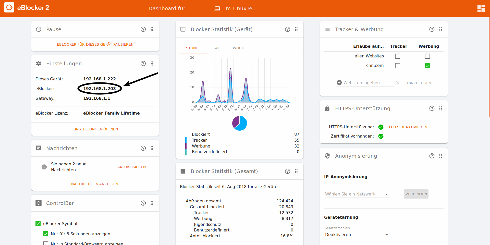

eBlocker Help > FAQs > Netzwerk
Einige Router zeigen in der Netzwerkansicht augenscheinlich immer eine andere IP-Adresse für den eBlocker an. Die angezeigte Adresse ist jedoch die des jeweiligen Gerätes (Computer, Handy, TV etc.), welches gerade in Benutzung ist und dadurch mit dem eBlocker kommuniziert. Der eBlocker selbst hat eine eindeutige IP-Adresse, die Sie auf dem eBlocker Dashboard auf der Karte Einstellungen sehen können.

Die wechselnde IP-Adresse ist auch der Grund dafür, dass die Jugendschutzfunktion einiger Router außer Kraft gesetzt wird.